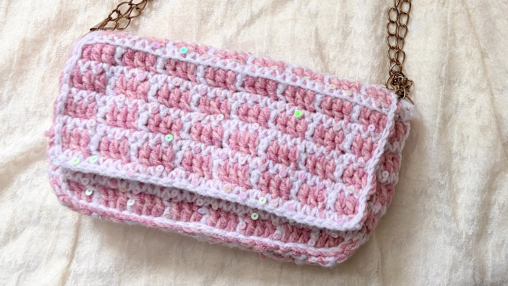
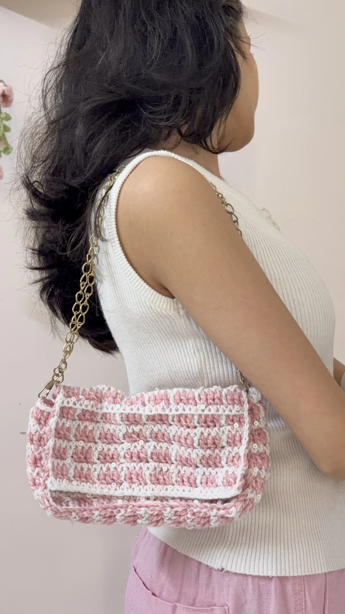

Free Crochet Pattern
How to Crochet a Tweed-look Party Bag
Looking for a cute little party bag to go with your favourite outfit? This crochet tweed-look bag is just the thing! It has a pretty pink tweed texture, a little sparkle, and a flap closure that gives it such a fun, dressy look. It’s compact but has enough room for your phone, lip gloss, and other little essentials.
I love how this bag has that perfect mix of cute and party-ready! The white borders, magnetic button closure, and metal chain strap add the finishing touches. Whether you’re heading to a party, going out for dinner, or dressing up for a special occasion, this little bag is a lovely accessory to carry along.

About the Pattern
If you’ve been wanting to try making your own crochet bag, this is such a fun project to try! I’d rate this pattern beginner to intermediate because it uses basic crochet stitches, but working with multiple yarns and adding sequins can take a little getting used to. The stitch pattern might feel a bit tricky in the beginning, but once you get into the rhythm, it becomes much easier to follow.
For this version, I’m using loose sequins instead of sequin thread to give the bag that little bit of sparkle. You can add as many or as few sequins as you like, depending on how sparkly you want your bag to be! The pattern involves crocheting the front and back panels, making a separate base and side strip, and joining everything together before adding the borders, closure, and chain strap.
If you’re new to making crochet bags, don’t worry if it takes a little time to get everything right. Take it one step at a time and follow along with the video tutorial, especially when working on the stitch pattern and assembling the bag. Once you get the hang of it, you’ll be surprised at how manageable the whole project feels!
Video Tutorial
Prefer watching and crocheting along? I’ve got you! Follow the full video tutorial below, where I walk you through the process of making this tweed-look party bag, from crocheting the panels to joining everything together and adding the finishing touches.
You can pause the video whenever you need to catch up or take a closer look at a stitch. I’d especially recommend watching the parts where we work with the different yarns and sequins, as well as the assembly. Grab your yarn, get comfy, and let’s make this cute little party bag together!
Materials Needed
- Light pink yarn (Weight 3)
- Dark pink yarn (Weight 3)
- White yarn (Weight 3)
- 4 mm crochet hook
- Loose sequins
- Sewing thread and needle
- Yarn needle
- Scissors
- Stitch markers
- Magnetic button closure
- Metal bag chain
Tip: You can use any yarn you like for this project! Just make sure to choose the right crochet hook for your yarn, as this can affect the size and texture of your finished bag.
Want to shop the materials?
Check out the materials here →Abbreviations
Written Pattern
How to Crochet a Tweed Bag
Before You Start
Holding the yarns: We’ll be holding the two pink yarns together as one strand and the white yarn with the sequin thread as another, so treat each pair as a single yarn while crocheting.
Prepare the sequins: Using a sewing needle, thread the loose sequins onto a separate sewing thread before you begin.
Carrying the yarn: When changing colours, don’t cut the yarn. Carry the unused yarn along the row and crochet over it as you work.
1. Front Panel
Foundation: Using both pink yarns held together, ch 33 (31 base chains + 2 turning chains).
R1 (Tweed Row): Skip 2 ch. Work 3 dc in pink, then 1 dc in white, changing to white on the last loop of the 3rd pink dc. Repeat (3 pink dc, 1 white dc) across.
R2 (White/Sequin Row): Using white yarn and the sequin thread, ch 1, turn. Work 1 sc in each st across, carrying the pink yarns along the row. Add sequins as desired.
R3–R10: Repeat R1 and R2 alternately, ending with R10.
Fasten off.
2. Back Panel & Flap
R1–R10: Repeat the Front Panel pattern.
R11: Work the Tweed Row pattern in BLO to create the flap fold line.
R12–R14: Continue alternating the White/Sequin Row and Tweed Row through both loops.
R15: Work the Tweed Row pattern in BLO.
R16–R22: Continue alternating the White/Sequin Row and Tweed Row through both loops.
Fasten off.
3. Side and Base Connecting Strip
Foundation: Using both pink yarns held together, ch 9 (7 base chains + 2 turning chains).
R1: Skip 2 ch. Work 3 dc in pink, 1 dc in white, then 3 dc in pink.
Following Rows: Alternate between the Tweed Row and White/Sequin Row patterns until the strip is long enough to fit along both sides and the bottom of the bag.
Fasten off.
4. Assembly and Finishing
Joining
Using white yarn without the sequin thread, sl st the connecting strip to the front and back panels.
- Along the sides: Work 2 sl st into each dc row and 1 sl st into each sc row.
- Along the bottom: Sl st stitch-for-stitch, skipping every 3rd dc on the strip to help align the pieces.
Edging
Using white yarn, sl st around the open edges, including the flap and bag opening.
Closure
Sew magnetic snap buttons onto the inside front panel and onto two small crocheted circles for the flap. To make each circle, create a magic ring and work 12 sc into it.
Strap
Attach the metal purse chain to the top corners of the bag.
Your crochet tweed party bag is ready!
A Few Helpful Tips
- Working with sequins: Since you’re using loose sequins rather than sequin thread, slide them along the thread as you crochet and add them wherever you want a little sparkle.
- Keeping your stitches neat: Carry the unused yarn inside your stitches so it stays hidden. Try not to pull it too tightly, as this can make the fabric bunch up.
- Assembly: I recommend watching the video tutorial for joining the panels and attaching the flap and closure. Seeing how everything fits together makes these steps much easier to follow.
A Little Note from Stitchy Days ♡
Hi there!
Thank you so much for trying one of my crochet patterns! I’m so happy to have you here, and I hope you enjoy making this project as much as I enjoyed creating it.
If you make something using this pattern, I’d love to see it! Feel free to tag Stitchy Days when you share your finished project. Seeing your creations means so much to me as I continue growing this little crochet corner.
Thank you for supporting my work and happy crocheting! ♡
